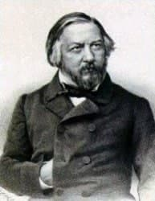
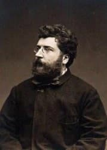
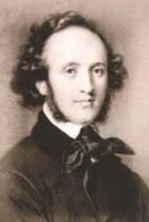
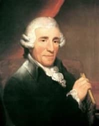
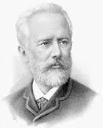
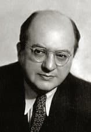
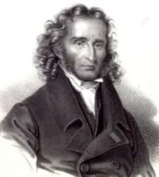
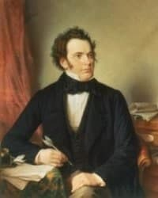
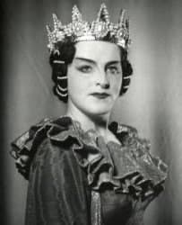
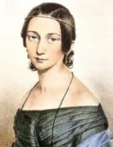

Անհատականություններ
Մարդիկ, ովքեր անգնահատելի ներդրում են ունեցել դասական երաժշտության մեջ
-
Միխայիլ Իվանովիչ Գլինկա

- Միխայիլ Իվանովիչ Գլինկա
- Ծննդյան ամսաթիվը. Մայիսի 20 (հունիսի 1) 1804
- Ծննդյան վայրը՝ Սմոլենսկի նահանգ, Նովոսպասսկոե
- Երկիր Ռուսաստան
- Մահացավ՝ 3 (15) 1857-ի փետրվար
Միխայիլ Իվանովիչ Գլինկա
Միխայիլ Իվանովիչ Գլինկան ռուսական դասական երաժշտության հիմնադիրն է, ով մեծ ազդեցություն է ունեցել կոմպոզիտորական ազգային դպրոցի ձեւավորման վրա:
Գլինկան ծնվել է 1804 թվականի մայիսի 20-ին (հունիսի 1) Սմոլենսկի նահանգի Նովոսպասսկոե գյուղում ՝ իր ծնողների կալվածքում: Տաս տարեկան հասակից նա սովորել է դաշնամուր և ջութակ: 1817 թվականին նրա ծնողները Միխայիլին նշանակեցին Սանկտ Պետերբուրգի գլխավոր մանկավարժական ինստիտուտի ազնվական տուն-ինտերնատ, որտեղ նրան ուսուցանում էր բանաստեղծ Վ.Կյուչելբեքերը: Գլինկան դասեր է վերցնում մեծագույն երաժիշտներից `դաշնամուրով Field. Ֆիլդից և Ս. Մայերից, ջութակից` Ֆ. Բոհեմից: Գիշերօթիկում Գլինկան հանդիպում է Ա.Ս. Պուշկինին, ով եկել էր այնտեղ ՝ տեսնելու իր կրտսեր եղբորը:
1822 թ.-ին պանսիոնատն ավարտելուց հետո, Գլինկան մեծ ուշադրություն է դարձնում կոմպոզիցիային. «Ինձ անհապաղ մի գայթակղիր» Ե.Ա.Բարատինսկու խոսքերը. «Մի՛ երգիր, գեղեցկուհի, ինձ հետ» Ա.Պուշկինի խոսքերը. Աշնանային գիշեր, գիշեր ջան »Ա. Յա. Ռիմսկի-Կորսակովի խոսքերին: 1823 թ.-ին նվագախմբի համար լարային սեպտետ, ադաջիո և ռոնդո ստեղծվեց, նվագախմբային երկու նախերգանքներ: Նույն ժամանակահատվածում Գլինկան հանդիպեց մարդկանց, ովքեր մեծ ազդեցություն ունեցան նրա աշխարհայացքի ձևավորման վրա `Վ. Ժուկովսկի, Ա. Գրիբոյեդով, Ա. Միցկևիչ, Ա. Դելվիգ, Վ. Օդոևսկի: 1823-ին լույս տեսավ Լիրիկական ալբոմը, որտեղ տարբեր հեղինակների գործերի թվում էին նաև Գլինկայի պիեսները:
1830-33-ին: Գլինկան մեկնում է Գերմանիա և Իտալիա, որտեղ հանդիպում է ականավոր կոմպոզիտորների. Վ. Բելլինին, Գ. Դոնիցետին, ուսումնասիրում է բել-կանտոյի վոկալ ոճը (իտալական bel canto) և ինքն էլ շատ բան է ստեղծագործում ՝ հատուկ ուշադրություն դարձնելով գործիքային անսամբլներին: Այս ժամանակահատվածում հայտնվեցին. Սեքսետետ դաշնամուրի համար, երկու ջութակ, ալտ, թավջութակ և կոնտրաբաս և «Պաթետիկ տրիո» դաշնամուրի, կլարնետի և ֆագոտի համար: Բեռլինում Գլինկան ավարտում է իր երաժշտական կրթությունը կոմպոզիցիայի, բազմաձայնության, գործիքավորման բնագավառում գերմանացի տեսաբան.. Դենի մոտ:
Գլինկան վերադարձավ Ռուսաստան ազգային երաժշտության մտքերով, ռուսական օպերա ստեղծելու մտադրությամբ: 1836 թ.-ին ավարտվեց «Իվան Սուսանին» օպերան, որի սյուժեի հիմքում ընկած էր Վ. Ukուկովսկու խորհուրդը `լեգենդը գյուղացի Իվան Սուսանինի մասին, ով իր կյանքը տվեց հանուն հայրենիքի փրկության: Օպերան կառուցվել է ռուսական երգահանության ամենահարուստ ավանդույթների հիման վրա, որոնք ներդաշնակորեն համակցվել են եվրոպական օպերային երաժշտության օրենքների հետ, սիմֆոնիկ զարգացման սկզբունքների հետ: Մեծ դժվարությամբ էր, որ օպերան ընդունվեց Սանկտ Պետերբուրգի Մեծ թատրոնում բեմադրելու համար, վերնագիրը վերանվանվեց «Կյանք ցարի համար», Գլինկային հրամայվեց վարձատրություն չպահանջել: Օպերայի պրեմիերան կայացավ 1836 թվականի նոյեմբերի 27-ին և մեծ հաջողություն ունեցավ: Ռուս, իսկ ավելի ուշ ՝ արտասահմանյան գրողներն ու քննադատները բարձր էին գնահատում նրա օպերան:
Գլինկան ստացել է Կապելմայստերի պաշտոնը դատարանի երգեցող մատուռի կողմից, որը նա ղեկավարել է երկու տարի:
1842 թվականի նոյեմբերի 27-ին Ալեքսանդր Պուշկինի համանուն պոեմի սյուժեի վրա տեղի ունեցավ «Ռուսլան և Լյուդմիլա» օպերայի պրեմիերան: Լայն, փակ վոկալ-սիմֆոնիկ տեսարանների չափված փոփոխությամբ, էպիկական, պատմողական տարրերի գերակշռությամբ այս օպերա-օրատորիան սառը ընդունվեց հասարակության կողմից իր նորարարական բնույթի պատճառով: Կարելի է ասել, որ հենց «Ռուսլան և Լյուդմիլա» օպերայի հետ սկսվեց նախկինում անհայտ հեքիաթային-էպիկական օպերային թատրոնի զարգացումը, որտեղ երաժշտական փոխաբերական ոլորտները խճճված են իրար ՝ էպիկական, քնարական, արևելյան, ֆանտաստիկ:
1844 թվականին Գլինկան մեկնում է Ֆրանսիա: Նրա տաղանդի մեծ երկրպագուն ֆրանսիացի կոմպոզիտոր Գ. Բերլիոզն է, ով իր համերգին հանդես եկավ Գլինկայի ստեղծագործություններից (Լեզգինկա ՝ Ռուսլանից և Լյուդմիլայից և Անտոնիդայի արիան ՝ Իվան Սուսանանից): Գլինկայի հեղինակային համերգը Փարիզում հաջող էր:
1845 թվականի մայիսին Գլինկան մեկնում է Իսպանիա, որտեղ ծանոթանում է իսպանական բանահյուսությանը: Այս ուղևորության տպավորությունները հիմք հանդիսացան երկու սիմֆոնիկ կտորների. «Արագոնյան ջոտա» (1845) և «Հիշողություն Կաստիլիայի» (1848, 2-րդ հրատարակություն ՝ «Հիշողություն ամառային գիշերը Մադրիդում», 1851), որի հետ զարգացումը Սկսվեց իսպանական երաժշտական բանահյուսությունը համաշխարհային սիմֆոնիկ երաժշտության մեջ:
Նվագախմբի համար Կամարինսկայա շերցոն (սիմֆոնիկ ֆանտազիա ՝ ռուսական ժողովրդական թեմաներով, 1848) սինթեզում է ռուսական ժողովրդական երաժշտության հարստությունը և նվագախմբի ոլորտում մասնագիտական հմտության բարձրագույն նվաճումները:
1851 թվականին Գլինկան վերադարձավ Ռուսաստան (Սանկտ Պետերբուրգ): Կոմպոզիտոր և վոկալի ուսուցիչ Գլինկայի ակտիվ մասնակցությամբ ստեղծվեց ռուսական վոկալ դպրոց: Իր ուսանողների շրջանում `Ն. Կ. Իվանով, Օ. Ա. Պետրով, Ա. Յա. Պետրովա-Վորոբյովա, Ա. Պ. Լոդի, Ս. Ս. Գուլակ - Արտեմովսկի, Դ. Մ. Լեոնովա: Նա գրում է «Ուսումնասիրություններ ձայնի համար», «վարժություններ ձայնի բարելավման համար», «Երգարվեստի դպրոց»: Ա.Ն. Սերովը գրել է իր «Նշումները գործիքավորման մասին» (1852, հրատարակված 1856): Գլինկայի երաժշտական արվեստը, նվագախմբային ստեղծագործությունները առանձնանում են թափանցիկության և տպավորիչ ձայնի, վառ պատկերապատկերի, գույների հարստության համադրությամբ:
Գլինկան մահացավ 1857 թվականի փետրվարի 15-ին Բեռլինում: Նրա պնդմամբ ՝ Գլինկայի մոխիրները տեղափոխվել են Ռուսաստան 1857 թվականին և թաղվել Սանկտ Պետերբուրգի Ալեքսանդր Նևսկու լավայի գերեզմանատանը:
-
Ժորժ Բիզե

- Ծնվել է ՝ 1838 թվականի հոկտեմբերի 25-ին
- Ծննդյան վայրը ՝ Փարիզ
- Երկիր ՝ Ֆրանսիա
- Մահացավ ՝ 1875 թ. Հունիսի 3-ին
Ալեքսանդր Սեզար Լեոպոլդ Բիզե
Ալեքսանդր Սեզար Լեոպոլդ Բիզե (fr. Alexandre-Cesar-Leopold Bizet, մկրտության ժամանակ ստացել է անունը Georges, fr. Georges) - XIX դարի ֆրանսիացի կոմպոզիտոր:
Բիզեն ծնվել է 1838 թվականի հոկտեմբերի 25-ին Փարիզում: Նախնական երաժշտական կրթությունը նա ստացել է ընտանիքում: Նրա հորեղբայր Ֆրանսուա Դելսարտը երգի ուսուցիչ էր, որը հայտնի էր ամբողջ Եվրոպայում: Բիզեն երաժշտական շնորհալի երեխա էր, ինը տարեկան հասակում ընդունվեց Փարիզի կոնսերվատորիա, նրա ուսուցիչներն էին P.-J.-G. Zimիմերմանն ու Գունոդը (հակապատկեր), Հալեվին (կոմպոզիցիա), Մարմոնտելը (դաշնամուր): Կոնսերվատորիայի տարիներին գրվել է չորս մասից բաղկացած սիմֆոնիան մեծ մաժորում (1855): 1857 թ.-ին Բիզեն Շառլ Լեկոկի հետ կիսեց quesակ Օֆենբախի կողմից սահմանված մրցանակը մեկ գործողությամբ բժիշկ հրաշքներ ստեղծելու համար և ստացավ Հռոմի մրցանակ (Clovis և Clotilde կանտատների համար), ինչը նրան թույլ տվեց երեք տարի ապրել Հռոմում, երաժշտություն ստեղծելը և իրենց կրթությունը կատարելը: Այս երեք տարվա ընթացքում գրված կամ սկսված գործերից միայն չորսն են պահպանվել, այդ թվում `« Դոն Պրոկոպիոն »օպերա-բուֆան, որը դարձել է Հաշվետվական աշխատանք, որը Հռոմի մրցանակի բոլոր դափնեկիրների համար պարտադիր է:
1863 թ.-ին Բիզեի Փարիզ վերադառնալուց հետո Փարիզի գլխավոր օպերային թատրոնի ՝ «Լիրիկե» թատրոնի ղեկավարությունը նրան հանձնարարեց գրել «Մարգարիտ որոնողներ» օպերան: Նրա հաջորդ ՝ «Պերտցի գեղեցկուհին» (Վալտեր Սքոթի վեպի հիման վրա նկարահանված) օպերան, որը երաժշտական առումով գերազանցում է նախորդին, բեմադրվել է 1867 թվականի դեկտեմբերին:
1869-ի հունիսին Բիզեն ամուսնացավ իր ուսուցչի դուստր Geneենևիվ Հալևիի հետ: Ֆրանկո-պրուսական պատերազմը, որը սկսվել էր 1870 թվականից, խաթարեց կյանքի սովորական ընթացքը: Բիզեն գրանցվեց Ազգային գվարդիայի կազմում և երկար ժամանակ չի ստեղծագործում, միայն 1871 թվականին հայտնվեց հմայիչ հավաքածու երկու դաշնամուրի համար ՝ «Մանկական խաղեր» (նվագախմբային ոչ լրիվ տարբերակը հայտնի է որպես «Փոքրիկ հավաքակազմ»): Նրանից հետո Բիզեն գրեց մեկ գործողությամբ «ileամիլե» (Ալֆրեդ դե Մուսեթի «Նամունա» պոեմի հիման վրա) և Ալֆոնս Դաուդեի «Արլեզիեն» դրամայի երաժշտությունը:
Հաջորդ քայլը «Կարմեն» օպերային գլուխգործոցն էր ՝ հիմնված Պրոսպեր Մերիմեի համանուն վեպի վրա: Այստեղ Բիզեն նոր բարձունքների է հասնում գործողության ընդհանուր մթնոլորտի և անհատական կերպարների երաժշտական պատկերման մեջ: Պրեմիերան Կոմիքսային օպերայում 1875 թվականին, օպերան հանդիսատեսի և քննադատների կողմից ընդունվեց սառնությամբ: Սա ծանր ազդեցություն ունեցավ Բիզեի վրա և ճակատագրական ազդեցություն ունեցավ նրա առողջության վրա. Տոնզիլիտի սրմանը հաջորդեցին երկու սրտի նոպաներ, որոնցից երկրորդը մահացու ելք ունեցավ:
Ժորժ Բիզեն մահացավ 1875 թվականի հունիսի 3-ին սրտի կաթվածից: «Կարմենի» իրական մասշտաբը գնահատվել է միայն Բիզեի մահից հետո:
-
Ֆելիքս Մենդելսոն

- Ծննդյան ամսաթիվը՝ 3 փետրվարի 1809
- Ծննդյան վայրը՝ Համբուրգ
- Երկիր՝ Գերմանիա
- Մահացավ՝ 1847 թ. Նոյեմբերի 4-ին
Ֆելիքս Մենդելսոն
Յակոբ Լյուդվիգ Ֆելիքս Մենդելսոն Բարթոլդին գերմանացի կոմպոզիտոր և դիրիժոր է:
Ֆելիքս Մենդելսոնը ծնվել է բանկիր Աբրահամ Մենդելսոնի ընտանիքում, որն այդ ժամանակ ունեցել է նշանակալից կարողություն և սոցիալական կարգավիճակ: Մենդելսոնի ընտանիքը, ծագումով հրեա, ընդունեց քրիստոնեություն և ստացավ երկրորդ ազգանունը ՝ Բարթոլդի: Ֆելիքս Մենդելսոնի երաժշտության առաջին ուսուցիչը Լյուդվիգ Բերգերն էր ՝ ականավոր դաշնակահար և կոմպոզիտոր: Միևնույն ժամանակ, Մենդելսոնը սկսեց ջութակ ուսումնասիրել Կառլ Հենինգի հետ: Արդեն ինը տարեկան հասակում Մենդելսոնը ստեղծեց իր առաջին երաժշտական գործերը. Ջութակի և դաշնամուրի սոնատ, դաշնամուրային տրիո, դաշնամուրի երկու սոնատ և մի շարք երգեհոնային ստեղծագործություններ:
Տասնմեկ տարեկան հասակում Ֆելիքս Մենդելսոնը ընդունվեց Բեռլինի երգարվեստի ակադեմիա, որտեղ նրա ուսուցիչ դարձավ ակադեմիայի ղեկավար Կառլ Ֆրիդրիխ elելտերը:
Այս տարիներին Մենդելսոնը հանդես եկավ որպես դաշնակահար և դիրիժոր: Երաժշտական աշխատանքներ այս շրջանից. Առաջին սիմֆոնիա մինոլում, Դաշնամուրի կոնցերտ անչափահասում, Դաշնամուրային կվինտետ և սեքսթեթ 1824 թվականին բեմադրվեց նրա «Երկու եղբորորդիներ» օպերան:
1825 թվականի մայիսին Մենդելսոնը իր կյանքում երկրորդ անգամ հանդիպեց Գյոթեի հետ, որին նվիրեց դաշնամուրային քառյակը: Նույն տարվա օգոստոսին կոմպոզիտորն ավարտեց իր երկու գործողությամբ «Կամաչոյի հարսանիքը» Սերվանտեսի «Դոն Կիխոտ» -ի դրվագներից մեկի հիման վրա:
1825-ի հոկտեմբերին գրվեց հայտնի «լարային» օկտետը, որը վկայում է կոմպոզիտորի հմտության մասին ՝ հիմք տալով համեմատության համար Մոցարտի կամ Բեթհովենի հետ: Նրան գերազանցեց միայն «Մի ամառվա գիշերվա երազը» կատակերգության էվերտյուրան, որը Մենդելսոնը գրել էր 1826-ի ամռանը: Այս ստեղծագործությունը, որը ներառում է հայտնի «Հարսանեկան երթը», հանդիսատեսին տեղափոխում է Շեքսպիրի հեքիաթային աշխարհ: Այն համաշխարհային փառք բերեց Մենդելսոնին:
1829 թվականի մայիսի 11-ին տեղի ունեցավ Յոհան Բախի «Սուրբ Մատթեոսի կրքերը» առաջին համերգային կատարումը: Այս աշխատանքը ղեկավարում էր Ֆելիքս Մենդելսոնը, նա միշտ հետաքրքրված էր Բախի երաժշտությամբ, այն ժամանակ գրեթե ամբողջովին մոռացված կոմպոզիտոր, այս աշխատանքի նոտաները նա ստացել էր տատիկից: Այս արտադրությունից տպավորությունն այնքան ուժեղ էր, որ Երգչական ակադեմիան այժմ որոշեց ամեն տարի իր երգացանկում ներառել «Սուրբ Մատթեոսի կրքերը»: Այս կատարումը խթան հաղորդեց 19-րդ դարում Բախի երաժշտության վերածննդին:
1829 թվականի ապրիլին Մենդելսոնը մեկնում է Անգլիա: Լոնդոնում, Ֆիլհարմոնիկ ընկերության համերգների ժամանակ, նա ղեկավարում է իր նվագախմբային աշխատանքները ՝ «Սիմֆոնիան մոլյակում», «Ամառային գիշերվա երազի» նախերգանքը և հանդես է գալիս որպես դաշնակահար ՝ Ուեբերի և Բեթհովենի ստեղծագործություններով: Երաժշտական սեզոնի ավարտին նա ուղևորվեց Շոտլանդիա, որի պատմությունը ոգեշնչեց նրան ՝ ստեղծելու էստիկական շոտլանդական սիմֆոնիա և Հեբրիդների ուրվագիծը:
1830 թ. Մայիսի 8-ին Մենդելսոնը ուղևորվում է Եվրոպայով մեկ `Մյունխեն, Փարիզ, Salալցբուրգ, Վիեննա: Հոկտեմբեր ամսվա սկզբին նա Վենետիկով և Ֆլորենցիայով հասավ Հռոմ, որտեղ մնաց ամբողջ ձմեռ: Հռոմում նա ստեղծեց Հեբրիդների նախերգանքն ու երաժշտությունը «Առաջին Walpurgis Night» - ի համար, ուրվագծեր իտալական և շոտլանդական սիմֆոնիաների համար:
Իտալիայից վերադառնալուն պես ՝ Մենդելսոնը համերգների մի ամբողջ շարք է անցկացրել Մյունխենում, Շտուտգարտում, Ֆրանկֆուրտում, իսկ 1831 թվականի դեկտեմբերին մեկնել է Փարիզ, որտեղ հանդիպել է Լիստին և Շոպենին: Փարիզյան հասարակությունը շատ թույն դիմավորեց Մենդելսոնի նոր ստեղծագործությունները (մասնավորապես դա վերաբերում էր «Բարեփոխման սիմֆոնիան»):
1832 թվականի ապրիլին Մենդելսոնը Լոնդոնում հանդես եկավ մի շարք համերգներով, որոնցում նա հանդես եկավ ոչ միայն որպես դիրիժոր, այլ նաև որպես երգեհոնահար, միևնույն ժամանակ նա հրատարակեց իր հայտնի Երգերն առանց բառերի առաջին գիրքը:
Հունիսի 25, 1832 Մենդելսոնը վերադառնում է Բեռլին: Այստեղ 1833 թվականի մարտին նա ավարտեց «Իտալական սիմֆոնիան», որի ուրախ ուրախ բացման ժամանակ կարելի է հիացմունք զգալ այս երկրի գեղեցկության համար: Այն առաջին անգամ կատարվել է 1833 թվականի մայիսի 13-ին Լոնդոնում: Շուտով Դյուսելդորֆում հրավեր ստացավ մասնակցելու Ստորին Ռեյնի երաժշտական փառատոնին ՝ որպես դիրիժոր: Մենդելսոնի հետ կնքվեց պայմանագիր, համաձայն որի ՝ նա դարձավ այս փառատոնի երաժշտական ղեկավարը:
1835 թվականին Քյոլնի երաժշտական փառատոնում փայլուն ելույթից հետո Մենդելսոնին առաջարկվեց սիմֆոնիկ համերգների դիրիժորի պաշտոնը Լայպցիգի Գեվանդհաուսում, և նա անմիջապես ընդունեց այս առաջարկը: 1835 թվականի հոկտեմբերի 4-ին Լայպցիգում տեղի ունեցավ առաջին համերգը Մենդելսոնի գավազանի ներքո, որի ընթացքում հնչեց «Peaceովի խաղաղություն և ուրախ ծովագնացություն» նախերգանքը: Շուտով Gewandhaus- ի համերգները կդառնան Եվրոպայի երաժշտական կյանքի ամենակարևոր իրադարձություններից մեկը: 1836 թ.-ին Լայպցիգի համալսարանը կոմպոզիտորին շնորհեց PhDD.
Լայպցիգում Մենդելսոնը սկսում է կազմել օրատորիոսների եռագրությունը աստվածաշնչյան «Եղիա - Պողոս - Քրիստոս» թեմաներով: Պաուլ օրատորիան ավարտվեց 1836-ի գարնանը և շուտով կատարվեց հեղինակի ղեկավարությամբ ՝ Ռեյնի երաժշտական փառատոնում:
1837 թվականի մարտին Մենդելսոնն ամուսնացավ Սեսիլիա Jeanանորենի հետ, այս ամուսնության մեջ նրանք ունեցան հինգ երեխա:
1842 թվականին կոմպոզիտորը և նրա կինը հերթական անգամ Առաջին անգամ այցելում է Անգլիա: Ստեղծագործության այս շրջանում Մենդելսոնը երաժշտություն էր գրում թատերական ներկայացումների համար ՝ «Անտիգոնե», «Էդիպ արքա», «Ամառային գիշերվա երազ»:
1843 թվականին Լայպցիգում, Մենդելսոնի ակտիվ օժանդակությամբ, հիմնադրվեց Կոնսերվատորիան, որը դարձավ Գերմանիայի առաջին բարձրագույն երաժշտական ուսումնական հաստատությունը: 1845 թ. Սեպտեմբերին Մենդելսոնը վերադարձավ Լայպցիգ, որտեղ նա դեռ Գևանդհաուսի համերգների դիրիժորն էր, դասավանդում էր Կոնսերվատորիայում և գրում Եղիա օրատորիան, որից հետո 1846 թ. Նրան տեղափոխում էին ստեղծելու եռագրության երրորդ մասը `Քրիստոսը: 1847 թվականին Մենդելսոնը վերջին անգամ մեկնում է Անգլիա, որտեղ Մանչեսթերում և Բիրմինգհեմում ներկայացնում է Եղիայի օրատորիան:
1847 թվականի մայիսի 14-ին, 42 տարեկան հասակում, մահանում է Մենդելսոնի ավագ քույրը ՝ Ֆաննին: Այս իրադարձությունից ցնցված ՝ կոմպոզիտորը դադարեցնում է իր համերգային գործունեությունը: 1847 թվականի հոկտեմբերի 28-ին Լայպցիգում կաթված է ստացել, իսկ երկրորդը ՝ նոյեմբերի 3-ին: Մենդելսոնը մահացավ 1847 թվականի նոյեմբերի 4-ին:
Երաժշտական շրջանակներում Ֆելիքս Մենդելսոնի հեղինակությունը շատ բարձր էր, նրան անվանում էին «տասնիններորդ դարի Մոցարտ»:
- Յոզեֆ Հայդն

- Ծնվել է ՝ 1732 թվականի ապրիլի 1-ին
- Ծննդյան վայրը ՝ Ռորաու գյուղ
- Երկիր ՝ Ավստրիա
- Մահացավ ՝ 31 մայիսի 1809 թ
Յոզեֆ Հայդն
Ֆրանց Յոզեֆ Հայդն (գերմ. Franz Joseph Haydn) - ավստրիացի կոմպոզիտոր, Վիեննայի դասական դպրոցի ներկայացուցիչ:
Յոզեֆ Հայդնը ծնվել է 1732 թվականի ապրիլի 1-ին ավստրիական Ռորաու գյուղում: Ծնողները, հայտնաբերելով երաժշտական ունակությունը տղայի մոտ, նրան ուղարկեցին Հայնբուրգ ան դեր Դոնաու քաղաք, որտեղ Յոզեֆը սկսեց երաժշտություն սովորել: 1740 թվականին Վիեննայի Սբ. Տաճարի մատուռի տնօրեն Գեորգ ֆոն Ռոյտերը: Ստեֆանը, տաղանդավոր տղային տարավ մատուռ:
1749 թվականին Հայդը կորցրեց ձայնը և այլևս չէր կարող ելույթ ունենալ մատուռում: Այս դժվար ժամանակահատվածում նա ստանձնեց տարբեր աշխատանքներ ՝ միաժամանակ փորձելով զբաղվել երաժշտական ինքնակրթությամբ: Նրա առաջին գլխավոր գործերը եղան երկու բրևիս մասսաներ ՝ «Մաժոր» և «Մաժոր» (1749), «Կաղ դև» օպերան, մոտ մեկ տասնյակ քառյակ (1755), առաջին սիմֆոնիա (1759):
1759 թվականին կոմպոզիտորը հրավիրվեց Կապելմայստերի պաշտոնին կոմս Կառլ ֆոն Մորզինի արքունիքում:
1760 թվականին Հայդնը ամուսնացավ Մարիա-Աննա Քելլերի հետ, ամուսնությունը հաջող էր, բայց նրանք երեխաներ չունեին:
1761-ին Հայդնը դարձավ երկրորդ Կապելմայստերը Էստերհազի իշխանների արքունիքում: Այս ընթացքում կոմպոզիտորը մեծ թվով ստեղծագործություններ է ստեղծում, նրա համբավը գնալով աճում է: 1770-ականներին: Էստերհազայում օպերային ներկայացումները հետզհետե վերաճեցին կանոնավոր օպերային սեզոնի: Նրանց երգացանկը բաղկացած էր հիմնականում իտալացի հեղինակների օպերաներից, բայց ժամանակ առ ժամանակ Հայդն ստեղծում էր իր սեփական օպերաները. Դրանցից մեկը ՝ «Լուսնային աշխարհը», որը հիմնված էր Կ. Գոլդոնիի պիեսի վրա (Il mondo della luna, 1777), մեծ հաջողությամբ նորացվում էր 1959 գ.
1781-ին, Վիեննայում գտնվելիս, Հայդը հանդիպեց և ընկերացավ Մոցարտի հետ: Երկու կոմպոզիտորներն էլ հիանում էին միմյանցով: 1785 թվականին Մոցարտը վեց հոյակապ լարային քառյակ նվիրեց Հայդնին: Մոցարտը և Հայդնը ստեղծագործական առումով շատ առումներով հարստացրեցին միմյանց:
1790 թվականին, Նիկոլաուս Էստերհազիի մահից հետո, նրա իրավահաջորդը լուծարեց նվագախումբը:
1791 թվականին Հայդնը պայմանագիր է ստանում աշխատել Անգլիայում: Անգլիայում Հայդնին ամենուր պատվով էին ընդունում: Հեյդնի համերգաշրջանը մեծ հաջողություն ունեցավ: Կոմպոզիտորը որոշեց հաջորդ մրցաշրջանը մնալ Լոնդոնում, որի համար ստեղծեց չորս նոր սիմֆոնիա: Դրանց թվում էր հայտնի Symphony Surprise- ը (No. 104, Symphony with Timpani Strike): Անգլիայի համար կոմպոզիտորը գրել է «Փոթորիկ» և «Սինֆոնիա» կոնցերտենտ երգչախումբը:
1792-ի ամռանը տուն վերադառնալիս Հեյդնը, անցնելով Բոննով, հանդիպեց Լ. Վան Բեթհովենին և նրան վերցրեց որպես ուսանող:
Մինչև 1794 թվականի հունվարը Հայդն ապրում էր Վիեննայում, այնուհետեւ մեկնում էր Անգլիա և մնում այնտեղ մինչև 1795-ի ամառը: Այս պահին կոմպոզիտորը ստեղծեց իր վերջին վեց սիմֆոնիաները (թիվ 99-104) և վեց հոյակապ քառյակներ:
Գործիքային երաժշտության ոլորտում Հայդն արդարացիորեն համարվում է 18-րդ դարի երկրորդ կեսի և 19-րդ դարասկզբի մեծագույն կոմպոզիտորներից մեկը: Նրա երաժշտական տաղանդը առավելագույն կերպով դրսևորվեց երկու եզրափակիչ կոմպոզիցիաներում. Մեծ օրատորիոսներ. «Աշխարհի ստեղծումը» (1798) և «Եղանակները» (1801): «Չորս եղանակները» օրատորիան ծառայում է որպես երաժշտական կլասիցիզմի չափանիշ:
Հեյդնի վերջին աշխատանքներն էին «Հարմոնիեմեսը» (1802) և անավարտ լարային քառյակը op.103 (1803):
Մեծ կոմպոզիտորը մահացավ Վիեննայում, 1809 թվականի մայիսի 31-ին:
Կոմպոզիտորի ստեղծագործական ժառանգությունն ընդգրկում է 104 սիմֆոնիա, 83 քառյակ, 52 դաշնամուրային սոնատ, օրատորիոս, 14 մասսա և օպերա:
- Պյոտր Իլյիչ Չայկովսկի

- Ծննդյան ամսաթիվ. 7 մայիսի, 1840 թ
- Ծննդյան վայրը. Վոտկինսկ (Վյատկայի մոտ)
- Երկիր Ռուսաստան
- Մահացավ ՝ 1893 թվականի նոյեմբերի 6-ին
Պյոտր Իլյիչ Չայկովսկի
Պյոտր Իլյիչ Չայկովսկի - ռուս կոմպոզիտոր, լավագույն մեղեդիներից մեկը, դիրիժոր, ուսուցիչ, երաժշտական քննադատ: 76 օպերաների, 10 օպերաների, 3 բալետների հեղինակ: Նրա համերգները և դաշնամուրի համար նախատեսված այլ ստեղծագործությունները, յոթ սիմֆոնիաները (վեց համարակալված և Մանֆրեդի սիմֆոնիան), չորս հավաքածու, ծրագրավորված սիմֆոնիկ երաժշտություն, «Կարապի լիճ», «Քնած գեղեցկուհի», «Շչելկունչիկը» բալետները մեծ ներդրում են համաշխարհային երաժշտական մշակույթում:
Չայկովսկին ծնվել է Վյատկա նահանգի Կամսկո-Վոտկինսկի գործարանի (այժմ ՝ Ուդմուրթիա քաղաք Վոտկինսկ քաղաք) գյուղում: Նրա հայրը Կամսկո-Վոտկինսկ պողպատե գործարանի ղեկավարն էր: Փիթերը ընտանիքի երկրորդ երեխան էր: Չայկովսկու ծնողները սիրում էին երաժշտություն: Նրա մայրը դաշնամուր նվագեց և երգեց: 1849-ին ընտանիքը տեղափոխվեց Ալապաևսկ քաղաք, իսկ 1850-ին ՝ Սանկտ Պետերբուրգ: 1850 թվականին նրա ծնողները Չայկովսկուն ուղարկեցին Իրավագիտության կայսերական դպրոց: 1852 թ., Ընդունվելով դպրոց, նա սկսեց լրջորեն ուսումնասիրել երաժշտություն, որը դասավանդվում էր որպես տարբերակ: Չայկովսկին հայտնի էր որպես լավ դաշնակահար և իմպրովիզացված ջրհոր: 1859 թվականին քոլեջն ավարտելուց հետո Չայկովսկին ստացել է կոչումների խորհրդատուի կոչում և անցել աշխատանքի Արդարադատության նախարարությունում: Ազատ ժամանակ նա այցելում է օպերային թատրոն, որտեղ մեծապես տպավորված է Մոցարտի և Գլինկայի օպերաների կատարումներից: 1861-ին ընդունվել է Ռուսաստանի երաժշտական ընկերության երաժշտության դասեր, իսկ 1862-ին ՝ Սանկտ Պետերբուրգի կոնսերվատորիա վերափոխվելուց հետո, դարձել է կոմպոզիտորական դասի դրա առաջին ուսանողներից մեկը: Կոնսերվատորիայում Չայկովսկու ուսուցիչներն էին Նիկոլայ Իվանովիչ areարեմբան (երաժշտության տեսություն) և Անտոն Գրիգորևիչ Ռուբինշտեյնը (նվագախումբ): Վերջինիս պնդմամբ նա թողնում է ծառայությունը և ամբողջովին նվիրվում երաժշտությանը:
1865 թվականին Չայկովսկին ավարտեց Կոնսերվատորիայի կուրսը մեծ արծաթե մեդալով ՝ գրելով կանտատա Շիլլերի «Ուրախության համար» օդի վրա: Նրա պահպանողական այլ ստեղծագործություններից են Օստրովսկու «Ամպրոպը» ներկայացման ուվերջը և խոտի աղջիկների պարերը, որոնք հետագայում ընդգրկվել են «Վոեվոդա» օպերայում: Կոնսերվատորիան ավարտելուց անմիջապես հետո, Նիկոլայ Ռուբինշտեյնի հրավերով, Չայկովսկին տեղափոխվում է Մոսկվա, որտեղ ստանում է նորաստեղծ կոնսերվատորիայի ազատ կոմպոզիցիայի, ներդաշնակության, տեսության և գործիքավորման դասերի պրոֆեսորի տեղ:
1868 թվականին Չայկովսկին առաջին անգամ տպագրվում է որպես երաժշտական քննադատ և հանդիպում է Պետերբուրգի մի խումբ կոմպոզիտորների ՝ «Հզոր բուռի» անդամների: Չայկովսկին հետաքրքրվում է ծրագրային երաժշտությամբ, և «Հզոր բուռ» -ի ղեկավար Միլի Բալակիրևի խորհրդով նա գրում է «Ռոմեո և Julուլիետ» ֆանտաստիկ նախերգանքը ՝ հիմնվելով Շեքսպիրի ողբերգության վրա (1869), և քննադատ Վ. Վ. Ստասովը նրան առաջարկում է Սիմֆոնիկ ֆանտազիա «Փոթորիկ» (1873):
Չայկովսկու ստեղծագործության մեջ 1870-ականները ինտենսիվ որոնումների ժամանակահատված: Կոմպոզիտորին գրավում է Ռուսաստանի պատմական անցյալը ՝ մարդկային ճակատագրի թեման: Այս պահին նա գրել է այնպիսի ստեղծագործություններ, ինչպիսիք են «Օպրիչնիկ» և «Դարբին Վակուլա» օպերաները, երաժշտություն Օստրովսկու «Ձյունանուշ» դրամայի, բալետ «Կարապի լիճ», երկրորդ և երրորդ սիմֆոնիաներ, «Ֆրանչեսկա դա Ռիմինի» ֆանտազիա, Դաշնամուրի առաջին կոնցերտ , Ռոկոկոյի թեմայի տատանումները թավջութակի և նվագախմբի համար, լարային քառյակ և այլն: 1872-1876 թվականներին: Չայկովսկին աշխատում է որպես «Ռուսկիե վեդոմոստի» թերթի երաժշտական քննադատ:
20 փետրվարի, 1877 թ. Բեմադրություն «Կարապի լիճ» բալետի Մեծ թատրոնում (լիբրետո ՝ Վ. Բեգիչևի և Վ. Գելցերի):
1879 թ. Մարտի 17-ին «Եվգենի Օնեգին» օպերայի առաջին ներկայացումը Մոսկվայի կոնսերվատորիայում:
1879-ին գրել է «Օռլեանի սպասուհին» (ինքնին կոմպոզիտորի լիբրետոն) օպերան:
70-ականների վերջին: Չայկովսկին անցավ հոգեկան ծանր ճգնաժամի միջով, որն առաջացավ իր ստեղծագործական ուժերի գերլարումից, ինչպես նաև իր անձնական կյանքի հանգամանքներից: Մի քանի տարի նա հիմնականում ապրում էր արտերկրում (հիմնականում Շվեյցարիայում և Իտալիայում, ինչպես նաև Կամենկայում `քրոջ հետ միասին): Այս տարիների ընթացքում Չայկովսկու համար կարևոր էին նյութական աջակցությունն ու նամակագրությունը N.F. von Meck- ի հետ:
80-ականների կեսերին: Չայկովսկին վերադարձավ ակտիվ երաժշտական և հասարակական գործունեությանը: 1885-ին ընտրվել է ՌՄՕ-ի Մոսկվայի մասնաճյուղի տնօրեն: 1885 թվականից նա մշտապես բնակվում էր Մոսկվայի շրջանում ՝ Կլինի (Մայդանովո, Ֆրոլովսկոե) շրջակայքում, 1892 թվականից ՝ հենց Կլինում, որտեղ կոմպոզիտորի մահից հետո բացվեց հուշատուն-թանգարան: 1880-ականների վերջից: շատ դիրիժորներ է կատարել Ռուսաստանում և արտերկրում: Համերգային ուղևորություններն ամրապնդեցին Չայկովսկու ստեղծագործական և ընկերական կապերը արևմտաեվրոպական երաժիշտների հետ (Հանս ֆոն Բյուլո, Էդվարդ Գրիգ, Անտոնին Դվոչակ, Գուստավ Մալեր, Արթուր Նիկիշ, Կամիլ Սեն-Սենս):
1884 թ. Փետրվարի 3-ին Մեծ թատրոնում (Մոսկվա) «Մազեպա» օպերայի պրեմիերան (Վ.Պ. Բուրենինի լիբրետոն Պուշկինի «Պոլտավա» պոեմից հետո):
1887 թ. Հունվարի 19-ին Մոսկվայում Մեծ թատրոնում բեմադրվեց «Չերևիչկի» օպերան` « Դարբին Վակուլա » օպերայի վերամշակում . Գոգոլ):
1890 թվականի հունվարի 3-ին «Քնած գեղեցկուհին» բալետի Մարիինյան թատրոնում պրեմիերա (լիբրետո ՝ Ի. Ա. Վսեվոլոժսկու):
1890 թ. Դեկտեմբերի 7-ին Մարիինյան թատրոնում բեմադրվեց «Բահերի թագուհին» օպերան (կոմպոզիտորի եղբոր ՝ Համեստի լիբրետոն ՝ կոմպոզիտորի մասնակցությամբ, Պուշկինի պատմվածքի հիման վրա, Կ. Ն. Բատյուշկովի, Գ. Ռ. Դերժավինի, Վ. Ա. ukուկովսկու, Պ. Մ. Կարաբանովի և Կ. Ֆ. Ռիլեևի համարների օգտագործմամբ)
1891 թվականին նա գրել է «Իոլանտա» օպերան (Մ. Չայկովսկու լիբրետո ՝ հիմնված Հ. Հերցի «Ռենեի արքայի դուստրը» դրամայի վրա): 1892 թ. Դեկտեմբերի 6-ին Սանկտ Պետերբուրգի Մարիինյան թատրոնում կայացավ «Իոլանտա» օպերայի պրեմիերան «Շչելկունչիկ» բալետի հետ (Է. Թ. Հոֆմանի հեքիաթից հետո ՝ լիբրետտո Մ.Ի.Պետիպա):
1891 թվականի գարնանը Պ.Ի. Չայկովսկին ուղևորվեց ԱՄՆ: Որպես իր ստեղծագործությունների դիրիժոր ՝ նա աղմկահարույց հաջողություններով է հանդես եկել Նյու Յորքում, Բալթիմորում և Ֆիլադելֆիայում:
1893 թվականի հոկտեմբերի 16-ին ՝ նրա վերջին կատարումը, նա առաջին անգամ ղեկավարեց իր Վեցերորդ սիմֆոնիան: Խոլերայի հիվանդության արդյունքում կոմպոզիտորը մահացավ 1893 թվականի հոկտեմբերի 25-ին (նոյեմբերի 6-ին) Սանկտ Պետերբուրգում և թաղվեց Ալեքսանդր Նևսկու Լավրայում ՝ Նկարիչների Նեկրոպոլիսում:
Գրեթե բոլոր երաժշտական ժանրերը ներկայացված են Չայկովսկու ստեղծագործություններում, որոնցում առաջատար էին օպերան և սիմֆոնիան: Չայկովսկու երաժշտության բովանդակությունը համընդհանուր է. Այն ընդգրկում է կյանքի և մահվան ձևերը, սերը, բնությունը, մանկությունը, ինչպես նաև ռուսական և համաշխարհային գրականության գործերը ՝ Ա.Ս. Պուշկինը և Ն.Վ. Գոգոլը, Շեքսպիրը և Դանթեն, բացահայտվում են նորովի: Հոգեւոր կյանքի խոր գործընթացներն արտացոլված են Չայկովսկու երաժշտության մեջ:
- Ալեքսանդր Շամիլևիչ Մելիք-Փաշաև

- Ծննդյան ամսաթիվը ՝ 10 (23) 1905 թվականի հոկտեմբեր
- Ծննդյան վայրը. Շուլավեր (Շումյաններ)
- Երկիր ՝ Ռուսական կայսրություն
- Մահացավ ՝ 1964 թ. Հունիսի 18-ին
Ալեքսանդր Շամիլևիչ Մելիք-Փաշաև
Ալեքսանդր Շամիլևիչ Մելիք-Փաշաևը սովետական ականավոր դիրիժոր է (ազգությամբ հայ):
Ալեքսանդր Շամիլևիչ Մելիք-Փաշաևը ծնվել է 1905 թվականի հոկտեմբերի 10-ին (23) Վրաստանի Shորջիա նահանգի Շուլավերեյ գյուղում (Շաումանի): Նրա մանկությունն ու պատանությունն անցել են Թիֆլիսում (1936 թվականից քաղաքը կոչվում է Թբիլիսի), նրա առաջին երաժշտական տպավորությունները հիմնականում կապված են Թիֆլիսի օպերային թատրոնի հետ: Գրեթե ամեն օր իսկական դպրոցում դասերից հետո նա վազում էր թատրոն ՝ չցանկանալով գոնե մեկ նոտա բաց թողնել իր սիրած օպերաների պարտիաներից: Տասնվեց տարեկանում Մելիք-Փաշաևն արդեն լավ գիտեր օպերային երգացանկի ամբողջ մասը: 1923 թվականին ՝ 18 տարեկան հասակում, նա առաջին անգամ ղեկավարեց Թիֆլիսի օպերային թատրոնում («Ֆաուստ» ներկայացումը):
1930-ին ավարտել է Ն.Ա. Ռիմսկի-Կորսակովի անվան Լենինգրադի պետական կոնսերվատորիան (ուսուցիչներ ՝ Ա. Գաուկ, Հ. Կուշնարև, Վ. Շչերբաչով) ՝ երկու տարվա ընթացքում ավարտելով հնգամյա դասընթացը: Վերադառնալով Վրաստան ՝ նա Թիֆլիսի օպերային թատրոնում բեմադրեց մի քանի ներկայացումներ, այդ թվում ՝ Ա. Բորոդինի «Իշխան Իգոր», Պ. Չայկովսկու «Բերակների թագուհին», Վ. Դոլիձեի «Լեյլա» օպերաները:
Մելիք-Փաշաևը եկել է Մոսկվայի Մեծ թատրոն ՝ որպես դիրիժոր 1931-ին, իր նորամուտը հայտնելով Գ. Վերդիի «Աիդա» օպերայով, որի մեկնաբանությունը կճանաչվի որպես ստեղծագործական ամենամեծ հաջողություններից մեկը և շարունակաբար աշխատել է դրանում: պաշտոնը մինչեւ 1953 թ. 1933-1934 թվականներին աշխատել է Մոսկվայի կոնսերվատորիայի օպերային ստուդիայում: 1938-ին մասնակցել է Առաջին համամիութենական դիրիժորական մրցույթին և դարձել դափնեկիր (երկրորդ տեղ): 1953-ին նա փոխարինեց Նիկոլայ Գոլովանովին ՝ դառնալով Մեծ թատրոնի գլխավոր դիրիժորը, վերջինիս ոչ պաշտոնական հեռացումից հետո:
Ի տարբերություն իր նախորդ նախորդների ՝ Սամոսուդի և Գոլովանովի, Մելիք-Փաշաևը զգալի թվով օպերաներ է վարել այնպիսի կոմպոզիտորների, ինչպիսիք են Վերդին, Բիզեն, Մասենեն, Պուչինին, Լեոնկավալոն, արևմտյան երգացանկից: Նա շատ բան արեց Մեծ թատրոնի խաղացանկում նոր օպերաների հայտնվելու համար (օրինակ ՝ Շապորին, Կաբալևսկի): Որպես դիրիժոր նա առանձնանում էր երաժշտական արտահայտության եռուզեռով և նրբագեղությամբ, երգիչների նկատմամբ շատ զգույշ և մտածված վերաբերմունքով: Սերգեյ Յակովլևիչ Լեմեշևը հիշում է. «Մեզ ՝ վոկալիստների համար, շատ սիրելի և ուրախալի է, երբ լայնամասշտաբ օպերային դիրիժորը հասկանում, զգում և սիրում է երգչուհուն: Ալեքսանդր Շամիլևիչը միշտ սիրում էր մեզ և վարվում էր այնպիսի խանդավառությամբ, ոգեշնչմամբ և խառնվածքով, կարծես նա երգեց մեզ հետ »:
Ալեքսանդր Շամիլևիչը ճանաչեց և շատ բարձր չափանիշներ սահմանեց իր մասնագիտության մեջ, երբ գերմանացի ականավոր դիրիժոր Հերման Աբենդրոթը հրավիրվեց Մեծ թատրոնում ղեկավարելու Բեթհովենի «Ֆիդելիոն», նա ապշած էր արտադրության բացառիկ որակից:
1958-ին նա բեմադրություններ է անցկացրել Չեխոսլովակիայի օպերային թատրոններում. «Իշխան Իգոր» և «Կարմեն» Պրահայում, «Եվգենի Օնեգին» Բրնոյում:
Իր առաջին դեբյուտը կատարելով 1961 թ.-ին Թագավորական օպերային թատրոնում ՝ Քովենթ Գարդենում (սովետական դիրիժորներից առաջինը) Պ.Ի. Չայկովսկու «Բահերի թագուհին» օպերայով, Մելիք-Փաշաևը վերադարձավ 1963-ին ՝ վարելու հոյակապ բեմադրված Աիդայի Գ. Վերդին ՝ Գալինա Վիշնեւսկայայի հետ գլխավոր դերում:
Մեծ թատրոնում նրա աշխատանքը անսպասելի ավարտ ունեցավ 1962 թվականին, երբ, ինչպես Սամոսուդն ու Գոլովանովն էին իրենից առաջ, աշխատանքից հեռացվեցին: Մի «լավ» օր, կանգ առնելով Մեծ թատրոնի հաջորդ ամսվա խաղացանկի առջև, նա այնտեղ չտեսավ իր անունը և իմացավ, թե ինչ է դա: Մելիք-Փաշաևը մահացավ երկու տարի անց ՝ 1964 թ.-ի հունիսի 18-ին:
Բարեբախտաբար, Մելիք-Փաշաևի ստեղծագործական ժառանգության շատ զգալի մասը գոյատևել է օպերայի ձայնագրությունների համեմատաբար մեծ քանակի շնորհիվ ներկայացումներ Մեծ թատրոնից: Դրանք ներառում են Լ. Վ. Բեթհովենի «Ֆիդելիո», Գ. Բիզեի «Կարմեն» (համերգային ձայնագրություն Իրինա Արխիպովայի և Մարիո դել Մոնակոյի հետ միասին), Ա.Պ. Բորոդինի «Արքայազն Իգոր», Մ. Գլինկայի «Կյանք ցարի համար», Բորիս Գոդունով «Պատգամավոր Մուսորգսկու կողմից (երկու տարբերակ` բաս Georgeորջ Լոնդոն և բաս Իվան Պետրով գլխավոր դերում), ՍՍ Պրոկոֆևի «Պատերազմ և խաղաղություն», Ա.Գ. Ռուբինշտեյնի «Դեմոն», «Դեկաբրիստներ» Յու. Ա. Շապորին, «Թագուհի բահերով »և Պ. Չայկովսկու« Չերևիչկի », Գ. Վերդիի« Աիդա »: Ալեքսանդր Շամիլևիչի սիմֆոնիկ երգացանկում ընդգրկված էին Բեթհովենի, Վերդիի, Շուբերտի, Բրամսի, Չայկովսկու, Ռիմսկի-Կորսակովի, Շոստակովիչի ստեղծագործությունները: Բորիս Գոդունովին ձայնագրելու համար դիրիժորը 1965 թվականին հետմահու արժանացավ Ամերիկյան արվեստի ակադեմիայի մրցանակի: Unfortunatelyավոք, Մելիք-Փաշաևի սիմֆոնիկ ձայնագրությունները սակավաթիվ են. Դրանց թվում են Գ. Վերդիի «Ռեքվիեմը» Լենինգրադի ֆիլհարմոնիկ նվագախմբի հետ և Պ.Ի. Չայկովսկու վեցերորդ սիմֆոնիան ՝ «Պաթետիկ», Մոսկվայի Մեծ թատրոնի նվագախմբի հետ:
Մելիք-Փաշաևի սեփական ստեղծագործություններից են «Պեչորին» (Մ. Լերմոնտովի ստեղծագործությունների հիման վրա նկարահանված) և «Տասներկուերորդ գիշեր» օպերաները ՝ նկարահանված Ուիլյամ Շեքսպիրի համանուն կատակերգության համար, Սիմֆոնիա ՝ անչափահաս, սիրավեպեր բանաստեղծություններից ՝ Ա. Պուշկինը և Ի. Էրենբուրգը:
Մրցանակներ
Ստալինյան առաջին աստիճանի մրցանակ (1942) - Պ. Չայկովսկու «Չերևիչկի» օպերային ներկայացման համար
Ստալինյան մրցանակ, առաջին աստիճան (1943) - Գ. Ռոսիինի «Ուիլյամ Թել» օպերայի համար Երկրորդ մրցանակ համամիութենական դիրիժորական մրցույթում (1938)
ՌՍՖՍՀ վաստակավոր արտիստ (1937)
ՌՍՖՍՀ ժողովրդական նկարիչ (1947)
ԽՍՀՄ ժողովրդական նկարիչ (1951)
երեք շքանշան և մեդալ
- Նիկոլո Պագանինի

- Ծնվել է 1782 թվականի հոկտեմբերի 27-ին
- Ծննդյան վայրը ՝Գենուա
- Երկիր ՝ Իտալիա
- Մահացավ ՝ 1840 թ. Մայիսի 27-ին
Նիկոլո Պագանինի
Նիկոլո Պագանինին իտալացի ջութակահար և կոմպոզիտոր է, համաշխարհային երաժշտական արվեստի պատմության մեջ ամենամեծ վիրտուոզներից մեկը:
Վեց տարեկանից Պագանինին ջութակ էր նվագում, իսկ ինը տարեկան հասակում նա համերգ էր տալիս Genենովայում, ինչը մեծ հաջողություն ունեցավ: Տղա ժամանակ նա գրել էր ջութակի համար մի քանի ստեղծագործություններ, որոնք այնքան դժվար էին, որ բացի իրենից ոչ ոք չէր կարող դրանք կատարել:
Տասնմեկ տարեկան տղա լինելով ՝ Պագանինին առաջին անգամ հայտնվեց Genենովայում, իսկ 1797 թ.-ին ՝ Ա. Ռոլայի մոտ, Պարմայում անցկացրած կարճատև ուսումնառությունից հետո, կատարեց իր առաջին համերգը Նվագելու ձևի ինքնատիպությունը, գործիքը վարելու անհամեմատ հեշտությունը շուտով նրան հռչակ բերեցին ամբողջ Իտալիայում: 1828-1834 թվականներին նա հարյուրավոր համերգներ է ունեցել Եվրոպայի խոշորագույն քաղաքներում ՝ իրեն հռչակելով որպես մի ամբողջ դարաշրջանի ամենազարմանալի վիրտուոզ:
Պագանինիի անգերազանցելի հաջողությունը ոչ միայն այս նկարչի խոր երաժշտական տաղանդի, այլև նրա արտասովոր տեխնիկայի, անթերի մաքրության մեջ էր, որով նա կատարում էր ամենադժվար հատվածները և ջութակի տեխնիկայի նոր հորիզոններում: Ուսումնասիրելով Կորելիի, Վիվալդիի, Տարտինիի, Վիոտիի աշխատանքները ՝ նա հասկացավ, որ ջութակի հնարավորությունները դեռ ամբողջությամբ չեն բացահայտվել նրանց կողմից: Հայտնի Լոկատելլիի «L'Arte di nuova modulazione» - ի աշխատանքը Պագանինիին առաջարկել է օգտագործել տարբեր նոր էֆեկտներ ջութակի տեխնիկայում: Գույների բազմազանություն, բնական և արհեստական ներդաշնակությունների լայն կիրառում, պիցիցատոյի արագ փոխում arco- ի հետ, զարմանալիորեն հմուտ և բազմազան ստակատոյի օգտագործում, երկակի և եռակի լարերի լայն տարածում, աղեղների կիրառման ուշագրավ բազմազանություն, մեկ տողի վրա ամբողջ կտորների նվագում (չորրորդ) - այս ամենը Paganini- ին իսկական վիրտուոզ դարձրեց ՝ չափազանց վառ անհատականությամբ: Պագանինին ուներ Stradivari, Guarneri, Amati ջութակների թանկարժեք հավաքածու, որոնցից Guarneri կտակեց իր հիանալի և ամենասիրված ջութակը հայրենի Genենովա քաղաքին ՝ չցանկանալով որևէ այլ նկարիչ նվագեր այն:
Նիկոլո Պագանինին մահացավ Նիցցայում, 1840 թվականի մայիսի 25-ին:
Պագանինիի անունը շրջապատված էր որոշակի առեղծվածով, որին ինքը նպաստեց ՝ խոսելով իր խաղի որոշ արտառոց գաղտնիքների մասին, որոնք նա կբացահայտեր միայն իր կարիերայի ավարտին: Պագանինիի կենդանության օրոք նրա աշխատանքներից շատ քչերն են տպագրվել, քանի որ հեղինակը վախենում էր, որ տպագրության միջոցով հնարավոր է բացահայտել իր վիրտուոզ շատ գաղտնիքներ: Հետագա դարաշրջանների ջութակի ամբողջ արվեստը զարգացավ Պագանինիի ոճի ՝ ներդաշնակների, պիցիկատոյի, կրկնակի նոտաների և տարբեր ուղեկցող պատկերների օգտագործման մեթոդների ազդեցության տակ: Նրա սեփական աշխատանքները լի են շատ դժվար հատվածներով, որոնցից կարելի է դատել Պագանինիի տեխնիկայի հարստության մասին: Այս կոմպոզիցիաներից մի քանիսը միայն պատմական հետաքրքրություն են ներկայացնում, բայց մյուսները, օրինակ ՝ Առաջին կոնցերտը Դ մաժորում, Երկրորդ կոնցերտը ՝ մինոր և 24 Կապրիզներ, հպարտանում են ժամանակակից կատարողների խաղացանկում:
- Ֆրանց Պիտեր Շուբերտ

- Ծնվել է ՝ 1797 թվականի հունվարի 31-ին
- Ծննդյան վայրը ՝ Վիեննա
- Երկիր ՝ Ավստրիա
- Մահացավ ՝ 1828 թվականի նոյեմբերի 19-ին
Ֆրանց Պիտեր Շուբերտ
Ֆրանց Պետեր Շուբերտը ավստրիացի ականավոր կոմպոզիտոր է, Վիեննայի դասական երաժշտական դպրոցի ամենամեծ ներկայացուցիչներից մեկը և երաժշտության մեջ ռոմանտիզմի հիմնադիրներից մեկը: Նա գրել է շուրջ 600 երգ, ինը սիմֆոնիա, պատարագային երաժշտություն, օպերա, ինչպես նաև մեծ թվով կամերային և մենակատար դաշնամուրային երաժշտություն:
Ֆրանց Շուբերտը ծնվել է 1797 թվականի հունվարի 31-ին Վիեննայի փոքրիկ արվարձան Լիխտենթալում ՝ երաժշտություն նվագել սիրող դպրոցի ուսուցչի ընտանիքում: Ֆրանցը շատ շուտ ցույց տվեց երաժշտական տաղանդը: Վեց տարեկանից նա սովորել է ծխական դպրոցում, իսկ տնային տնտեսությունները նրան սովորեցրել են ջութակ և դաշնամուր նվագել:
Տասնմեկ տարեկան հասակում Ֆրանցին ընդունեցին դատապարտյալ ՝ դատարանի մատուռ, որտեղ, բացի երգելուց, նա սովորեց նվագել բազմաթիվ գործիքների և երաժշտության տեսության վրա (Ա. Սալիերիի ղեկավարությամբ): Սովորել է հիմնականում Գլյուկը, Մոցարտը և Բեթհովենը: Առաջին անկախ գործերը ՝ «Սատանայի ամրոցը» օպերան և զանգվածային ֆոր-մաժորը, նա գրել է 1814 թ.
Շուբերտի շնորհիվ երգի ժանրը ստացավ արվեստի ձև ՝ հարստացնելով համերգային վոկալ երաժշտության դաշտը: «Անտառի ցարը» բալլադը, որը գրվել է 1816 թվականին, հռչակ բերեց կոմպոզիտորին: Դրանից անմիջապես հետո հայտնվեցին «Թափառողը», «Գովք արցունքներին», «uleուլեյկա» և այլն:
Վոկալ գրականության մեջ մեծ նշանակություն ունեն Շուբերտի երգերի հավաքածուները Վիլհելմ Մյուլլերի բանաստեղծությունների ՝ «Գեղեցիկ Միլլերը», «Ձմեռային ուղին», որոնք, ասես, շարունակություն են Բեթհովենի ծրագրի, արտահայտված «Դեպի հեռավոր սիրելին »: Ուշագրավ է նաև «Կարապի երգ» ժողովածուն, որի շատ երգեր համաշխարհային հռչակ են ձեռք բերել (օրինակ ՝ «Սերենադ», «Ապաստան», «Ռիբաչկա», «Byովափին»): Շուբերտը չի փորձել ընդօրինակել ազգային բնույթը, բայց նրա երգերն ակամա արտացոլում էին ազգային հոսանքը, և դրանք դառնում էին երկրի սեփականությունը »: Շուբերտը գրել է գրեթե 600 երգ:
Շուբերտի զարմանալի երաժշտական նվերը արտացոլվեց նաև դաշնամուրային և սիմֆոնիկ երաժշտության ոլորտում: Նրա ֆանտազիաները C մաժորում և F մինորում, իմպրովիզացված, երաժշտական պահեր, սոնատներ ապացույցն են հարուստ ֆանտազիայի և ներդաշնակ մեծ հմտության: Դ մինոր լարային քառյակում, C մաժորում ՝ հնգյակը, «Իշխանի» դաշնամուրային քառյակը, C մաժորում մեծ սիմֆոնիան և B մինորում ՝ անավարտ սիմֆոնիան, Շուբերտը Բեթհովենի իրավահաջորդն է:
Օպերային ոլորտում Շուբերտն այդքան էլ շնորհալի չէր, չնայած որ նա գրել է դրանցից մոտ 20-ը, որոնց թվում են «Դավադիրները կամ տնային պատերազմը», «Ռոզամունդը»:
Շուբերտի բազմաթիվ եկեղեցական գործերից (մասսաներ, օֆերտորիաներ, շարականներ և այլն), մասսան E flat major- ում առանձնանում է հատկապես իր վսեմ բնավորությամբ և երաժշտական հարստությամբ:
1813 թվականից սկսած ՝ նա անընդհատ գրում է. Կենսագիրների խոսքով ՝ Շուբերտը երբեք իր գրվածքներում ոչինչ չի փոխել, քանի որ այն ժամանակ չի ունեցել: Նրա կյանքի վերջին տարին, չնայած վատ առողջությանը, հատկապես բեղմնավոր էր. Այդ ժամանակ նա գրեց սիմֆոնիա C major- ում և մասսա E flat major- ում: Իր կենդանության օրոք նրա դերասանական կազմը առանձնակի հաջողություն չի ունեցել: Նրա մահից հետո մնաց ձեռագրերի զանգված, որոնք հետագայում տպագրվեցին (6 մասսա, 7 սիմֆոնիա, 15 օպերա):
Կոմպոզիտորը մահացավ տիֆի տենդից Վիեննայում 1828 թվականի նոյեմբերի 19-ին:
Schշգրիտ ամսաթիվը, երբ Շուբերտը ստեղծեց իր ութերորդ սիմֆոնիան B minor («Անավարտ»), անհայտ է: Այն նվիրված էր Ավստրիայի երաժշտական ընկերությանը, և Շուբերտը ներկայացրեց դրա երկու մասերը 1824 թ .:
Միշտ առեղծված է մնացել, թե ինչու Շուբերտը չավարտեց իր Ութերորդ սիմֆոնիան: Թվում է, որ նա մտադիր էր այն հասցնել իր տրամաբանական ավարտին, առաջին scherzos- ն ամբողջովին ավարտված էին, իսկ մնացածները հայտնաբերվեցին էսքիզներում: Այս տեսանկյունից «Անավարտ» սիմֆոնիան ամբողջովին ավարտված աշխատանք է, քանի որ պատկերների շրջանակը և դրանց զարգացումը իրեն սպառում են երկու մասի սահմաններում:
- Բիրգիտ Նիլսոն

- Ծննդյան ամսաթիվ. 17 մայիսի, 1918 թ
- Ծննդյան վայրը. Սկոնե (նահանգ) Երկիր ՝ Շվեդիա
- Մահացավ ՝ 25 դեկտեմբերի, 2005 թ
Բիրգիտ Նիլսոն
Բիրգիտ Նիլսոնը շվեդական օպերային երգիչ է, դրամատիկ սոպրանո: 20-րդ դարի երկրորդ կեսի ամենահայտնի օպերային երգիչներից մեկը: Նա այնքան ուժեղ հետք թողեց շատ դերերի վրա, որ նրանց անվանում էին «Նիլսոնի երգացանկ», և նա հատուկ ճանաչում ստացավ Վագների երաժշտության ՝ «Վագների սոպրանո» կատարման մեջ: Իր կարիերայի գագաթնակետին նա նա զարմացրեց հանդիսատեսին նվագախմբի համընկնող ձայնի անխռով ուժով և շնչառության ուշագրավ վերահսկողությամբ, որը նրան թույլ էր տալիս զարմանալիորեն երկար նոտա պահել: Իր գործընկերների շրջանում նա հայտնի էր խաղային հումորի զգացումով և լիդերական բնավորությամբ: Մարթա Բիրգիտ Նիլսոնը ծնվել է 1918 թվականի մայիսի 17-ին գյուղացիական ընտանիքում և իր ամբողջ մանկությունն անց է կացրել Սկոն նահանգի Վաստրա Կարուպ գյուղի ֆերմայում ՝ Մալմու քաղաքից 100 կիլոմետր հեռավորության վրա: Ֆերմայում էլեկտրականություն կամ հոսող ջուր չկար, ինչպես բոլոր գյուղացի երեխաները, նա դեռ վաղ տարիքից օգնում էր իր ծնողներին ՝ տնկել և քաղել բանջարեղեն, կթող կովեր, խնամել այլ կենդանիներ և կատարել անհրաժեշտ տնային աշխատանք: Նա ընտանիքի միակ երեխան էր, և Բիրգիտ Նիլսի հայրը ՝ Փիթեր Սվենսոնը, հույս ուներ, որ նա իր ժառանգորդը կլինի այս գործում: Բիրգիտը մանկուց սիրում էր երգել, և, իր խոսքով, նա սկսեց երգել մինչ քայլելը, նա իր տաղանդը ժառանգեց մորից ՝ Justուստինա Պոլսոնից, ով գեղեցիկ ձայն ուներ և ակորդեոն նվագել գիտեր: Իր չորրորդ ծննդյան օրը Բիրգիտը ՝ աշխատակցուհի և Օտտոյի ընտանիքի գրեթե անդամ, նրան նվիրեց խաղալիք դաշնամուր ՝ տեսնելով, որ նա հետաքրքրված է երաժշտությամբ, հայրը շուտով նվագեց նվագախմբին: Նողները շատ հպարտ էին իրենց դստեր տաղանդով, և նա հաճախ էր երգում հյուրերի, գյուղերի արձակուրդների և տարրական դպրոցների տնային համերգների ժամանակ: Դեռահաս տարիքում ՝ 14 տարեկանից, նա ելույթ է ունեցել հարեւան Բաստադ քաղաքում գտնվող եկեղեցական երգչախմբում և սիրողական թատերախմբում: Կանտորը ուշադրություն հրավիրեց իր կարողությունների վրա և Բիրգիտին ցույց տվեց Աստորպ քաղաքի երգարվեստի և երաժշտության ուսուցիչ Ռագնար Բլենովին, ով անմիջապես ճանաչեց իր հնարավորությունները և ասաց. «Երիտասարդ տիկինը հաստատ կդառնա մեծ երգչուհի»: 1939 թվականին նա նրա հետ երաժշտություն է սովորել, և նա խորհուրդ է տվել նրան հետագա զարգացնել իր կարողությունները: 1941 թվականին Բիրգիտ Նիլսոնը ընդունվեց Ստոկհոլմի Թագավորական երաժշտական ակադեմիա: Հայրը դեմ էր այս ընտրությանը, նա հույս ուներ, որ Բիրգիտը կշարունակի իր բիզնեսը և կժառանգի նրանց ուժեղ տնտեսությունը, նա հրաժարվեց վճարել նրա կրթության համար: Մայրը իր անձնական խնայողություններից գումար է հատկացրել վերապատրաստման համար: Դժբախտաբար, Justասթինան չկարողացավ ամբողջովին ուրախանալ դստեր հաջողություններով, 1949 թ.-ին նրան մեքենա էր հարվածել, այս իրադարձությունը ավերեց Բիրգիտին, բայց ամրապնդեց նրանց հարաբերությունները հոր հետ: 1945 թ., Երբ դեռ ակադեմիայում էր սովորում, Բիրգիտը գնացքում հանդիպեց անասնաբուժական քոլեջի ուսանողուհի Բերտիլ Նիկլասոնին, նրանք անմիջապես սիրահարվեցին և շուտով նա ամուսնության առաջարկ արեց նրան: 1948 թվականին նրանք ամուսնացան: Բիրգիտն ու Բերտիլը միասին մնացին ամբողջ կյանքում: Նա երբեմն ուղեկցում էր նրան աշխարհով մեկ շրջագայությունների ժամանակ, բայց ավելի հաճախ նա մնում էր և աշխատում տանը: Բերտիլը առանձնապես հետաքրքրված չէր երաժշտությամբ, այնուամենայնիվ, նա միշտ հավատում էր իր կնոջ տաղանդին և աջակցում էր Բիրգիտին իր աշխատանքում, ինչպես նա էր աջակցում նրա աշխատանքին: Բիրգիտը երբեք չի փորձել տանը ամուսնու հետ. «Այս անվերջ կշեռքները կարող են փչացնել ամուսնությունների մեծ մասը կամ գոնե նյարդերը», - ասաց նա: Տանը նա խաղաղություն գտավ և կարող էր իր մտքերը կիսել Բերտիլի հետ, նա գնահատում էր այն փաստը, որ նա իրեն վերաբերվում էր ինչպես սովորական կնոջ, և երբեք «մեծ օպերային դիվային» պատվանդանին չէր դնում: Նրանք երեխաներ չունեին: Թագավորական ակադեմիայում Բիրգիտ Նիլսոնի վոկալի ուսուցիչներն էին Josephոզեֆ Հիսլոպը և Առնե Սանեգարդը: Այնուամենայնիվ, նա իրեն համարեց ինքնուսույց և ասաց. «Լավագույն ուսուցիչը բեմն է»: Նա զղջաց իր վաղ մարզման համար և իր հաջողությունը վերագրեց իր բնական տաղանդին. Բիրգիտ Նիլսոնը իր դեբյուտը կատարեց 1946 թվականին Ստոկհոլմի Թագավորական օպերային թատրոնում, որպես Ագաթա Կ.Մ.Վեբերի «Ազատ հրաձիգ» ֆիլմում, ներկայացումից երեք օր առաջ նրան հրավիրեցին հիվանդ դերասանուհուն փոխարինելու: Դիրիժոր Լեո Բլեչը շատ դժգոհ էր իր ելույթից, և որոշ ժամանակ նրան այլ դերեր չէին վստահում: Հաջորդ տարի (1947) նա հաջողությամբ անցավ լսումների, այս անգամ բավական ժամանակ էր, նա լավ էր պատրաստված և փայլուն կատարեց Վերդիի «Լեդի Մակբեթ» ֆիլմում գլխավոր դիրիժորը դիրիժոր Ֆրից Բուշի ղեկավարությամբ: Նա շահեց շվեդ հանդիսատեսի ճանաչումը և հաստատվեց թատերախմբում: Ստոկհոլմում նա ստեղծեց քնարական և դրամատիկական դերերի կայուն ռեպերտուար, այդ թվում `Դոննա Աննան Մոցարտի Դոն ovanովաննիից, Աիդա Վերդին, Տոսկա Պուչինին, ieիգլինդեն Վագների Վալկիրիայից, Մարշալշը Շտրաուսի Ռոզ ասպետից և այլք` դրանք շվեդերեն կատարելով: Ֆրից Բուշը կարևոր դեր է խաղացել Բիրգիտ Նիլսոնի միջազգային կարիերայի զարգացման գործում, որը 1951-ին նրան ներկայացրեց Գլենդեբուրնի օպերային փառատոնին `որպես Մոցարտի« Իդոմենեո, Կրետեի արքա »օպերայից Էլեկտրա: 1953-ին մի դ Նիլսոնը ՝ Վիեննայի պետական օպերայում. սա շրջադարձային պահ էր նրա կարիերայում, և նա անընդհատ ելույթ կունենա այնտեղ ավելի քան 25 տարի: Դրան հաջորդեցին Բայրանյան փառատոնում Վագների «Լոհենգրին» ֆիլմում Էլբան Բրաբանցի և Բավարիայի պետական բեմադրության օպերայում Նիբելունգենի «Մատաներ» ամբողջական ցիկլում նրա առաջին Բրյունհիլդեի դերերը: 1957-ին, նույն դերով, նա առաջին անգամ հանդես եկավ Քովենթ Գարդենում:
Բիրգիտ Նիլսոնի ստեղծագործական կյանքի մեծագույն իրադարձություններից մեկը համարում է 1958 թվականին Լա Սկալայում օպերային սեզոնի բացման հրավերը ՝ արքայադուստր Տուրանդոտ Գ. Պուչինիի դերում, այդ ժամանակ նա երկրորդ ոչ-իտալացի երգիչն էր պատմություն Մարիա Կալասից հետո, որին շնորհվեց Լա Սկալայում մրցաշրջանի արտոնյալ բացումը: 1959 թվականին Նիլսոնը առաջին անգամ ելույթ ունեցավ Մետրոպոլիտեն օպերայում որպես Իզոլդ Վագների Տրիստանից և Իզոլդայից և Վագների երգացանկում փոխարինեց նորվեգացի սոպրանո Քիրստեն Ֆլագստադին:
Բիրգիտ Նիլսոնը իր ժամանակի առաջատար վագներյան սոպրանոն էր: Այնուամենայնիվ, նա նաև երգեց շատ այլ հայտնի սոպրանոյի դերեր ՝ իր երգացանկում ունենալով ավելի քան 25 դեր: Նա ելույթ է ունեցել աշխարհի գրեթե բոլոր խոշոր օպերաներում, այդ թվում ՝ Մոսկվայում, Վիեննայում, Բեռլինում, Լոնդոնում, Նյու Յորքում, Փարիզում, Միլանում, Չիկագոյում, Տոկիոյում, Համբուրգում, Մյունխենում, Ֆլորենցիայում, Բուենոս Այրեսում և այլուր: Ինչպես բոլոր օպերային երգիչները, բացի թատերական ներկայացումներից, Բիրգիտ Նիլսոնը տարբեր դասական կոմպոզիտորների արտասանությամբ հանդես է եկել ասմունքով: Բիրգիտ Նիլսոնի ամենահայտնի համերգներից մեկը Սիդնեյի սիմֆոնիկ նվագախմբի հետ համերգն էր `Չարլզ Մակկերասի ղեկավարությամբ` «Բոլոր վագներ» ծրագրով, դա Սիդնեյի օպերային թատրոնի համերգասրահի բացման առաջին պաշտոնական համերգն էր 1973 թ. Եղիսաբեթ Երկրորդ թագուհու ներկայությամբ: Այս համերգը կարող եք լսել australianscreen- ով առցանց (https://aso.gov.au/titles/music/sydney-opera-house-opening/):
Բիրգիտ Նիլսոնի կարիերան բավականին երկար էր, նա գրեթե քառասուն տարի ելույթ ունեցավ ամբողջ աշխարհում: 1982-ին Բիրգիտ Նիլսոնը կատարեց իր վերջին ելույթը Մայնի Ֆրանկֆուրտ քաղաքում `Էլեկտրայի դերում, օպերային բեմում: Վիեննայի պետական օպերայում Ռ. Շտրաուսի «Կինը առանց ստվերի» օպերայի համար նախատեսված էր բեմի հանդիսավոր հրաժեշտ, սակայն Բիրգիտը զգաց, որ չի կարող ընդունել այս դերը և չեղյալ հայտարարեց իր ելույթը Վիեննայում: Այսպիսով, Ֆրանկ ֆուրտում ներկայացումը վերջինն էր օպերային բեմում: 1984-ին նա կատարեց իր վերջին համերգային շրջագայությունը Գերմանիայում և վերջապես հեռացավ մեծ երաժշտությունից: Բիրգիտ Նիլսոնը վերադարձավ հայրենիք և շարունակեց բարեգործական համերգներ անցկացնել երիտասարդ երգիչների մասնակցությամբ տեղի երաժշտական հասարակության համար, որը սկիզբ է առել 1955 թ.-ին, և դրանք սիրվել են շատ օպերային սիրահարների շրջանում: Որպես վերջին ժամանցի իր վերջին նման համերգը նա կատարել է 2001 թվականին:
Բիրգիտ Նիլսոնը ապրել է երկար և իրադարձություններով լի կյանքով: Նա խաղաղ մահացավ իր տանը 2005 թվականի դեկտեմբերի 25-ին ՝ 87 տարեկան հասակում: Նրա երգերը շարունակում են ոգեշնչել կատարողներին, երկրպագուներին և օպերայի սիրահարներին ամբողջ աշխարհում:
Բիրգիտ Նիլսոնի վաստակը գնահատվել է տարբեր երկրների, այդ թվում ՝ Շվեդիայի, Դանիայի, Ֆրանսիայի, Գերմանիայի, Ավստրիայի, Նորվեգիայի, ԱՄՆ-ի, Անգլիայի, Իսպանիայի և այլ երկրների բազմաթիվ պետական և հասարակական մրցանակների կողմից: Նա մի քանի երաժշտական ակադեմիաների և հասարակությունների պատվավոր անդամ էր: 2014-ին Շվեդիան նախատեսում է թողարկել 500 կրոնային նշում `Բիրգիտ Նիլսոնի դիմանկարով:
Բիրգիտ Նիլսոնը հիմնադրամ է կազմակերպել շվեդ երիտասարդ տաղանդավոր երգիչներին աջակցելու համար և նրանց կրթաթոշակ է հանձնել հիմնադրամից, առաջին կրթաթոշակը շնորհվել է 1973 թվականին և շարունակվում է վճարվել շարունակաբար մինչ օրս: Նույն հիմնադրամը կազմակերպեց «Բիրգիտ Նիլսոնի մրցանակ», որը նախատեսված էր օպերայի աշխարհում, լայն իմաստով, ինչ-որ արտառոց բանի հասած մարդու համար: Այս մրցանակը տրվում է 2-3 տարին մեկ, կազմում է մեկ միլիոն դոլար և ամենամեծ մրցանակն է երաժշտության մեջ: Ըստ Բիրգիտ Նիլսոնի կտակի, մրցանակը սկսեց հանձնել նրա մահվանից երեք տարի անց, նա ընտրեց առաջին սեփականատիրոջը և դա Պլասիդո Դոմինգոն էր `մեծ երգիչ և օպերային բեմի իր գործընկերը, ով մրցանակը ստացավ 2009 թ. ձեռքերը Շվեդիայի թագավոր Չարլզ XVI- ի: 2011-ին երկրորդ հաղթողը դիրիժոր Ռիկարդո Մուտին էր:
- Կլարա Շուման

- Ծնվել է ՝ 1819 թվականի սեպտեմբերի 13-ին
- Ծննդյան վայրը ՝ Լայպցիգ
- Երկիր ՝ Գերմանիա
- Մահացավ ՝ 1896 թ. Մայիսի 20-ին
Կլարա Շուման
Կլարա Ժոսեֆին Ուիկ Շումանը գերմանացի կոմպոզիտոր, երաժիշտ և ուսուցիչ է: Ռոմանտիկայի դարաշրջանի ամենահայտնի դաշնակահարներից մեկը, նրա գեղարվեստական կարիերան տևեց 61 տարի: Նա փոխեց դաշնամուրային մենահամերգների ձևաչափը և երգացանկը ՝ ստեղծելով հանդիսատեսի նոր համեր: Գերմանացի հայտնի կոմպոզիտոր Ռոբերտ Շումանի կինը: Նա և նրա ամուսինը աջակցում էին կոմպոզիտոր Յոհաննես Բրամսին, և նա առաջինն էր, ով հանրության առջև ելույթ ունեցավ իր ստեղծագործություններով:
Կլարա Շումանը ծնվել է Լայպցիգում, 1819 թվականի սեպտեմբերի 13-ին: Նրա ծնողները ՝ Ֆրեդերիկ և Մարիան Ուիք, ամուսնալուծվել են, երբ նա դեռ 6 տարեկան էր: Կլարան մնաց իր հոր ՝ երաժշտության հայտնի ուսուցչի մոտ: Այս իրադարձությունը տրավմատիզացրեց աղջկան, բայց մայրն ու դուստրը անընդհատ թղթակցում էին միմյանց հետ, և, անկասկած, երկու ծնողներն էլ ազդում էին Կլարայի զարգացման և դաստիարակության վրա:
1828 թվականի մարտին, ութ տարեկան հասակում, երիտասարդ Կլարա Վիկը ելույթ ունեցավ Լայպցիգի հոգեբույժ, հոգեբուժարանի տնօրեն Էրստ Կարուսի տանը, այս ներկայացման ժամանակ նա հանդիպեց մեկ այլ շնորհալի երիտասարդ դաշնակահարի ՝ Ռոբերտ Շումանի, որը նույնպես հրավիրված էր այս երաժշտական երեկոն, որը իրենից 9 տարով մեծ էր: Շումանն այնքան տպավորված էր Կլարայի խաղից, որ հետո նա մորից թույլտվություն խնդրեց դադարեցնել իր իրավագիտությունը, որն իրեն երբեք չէր հետաքրքրել, և երաժշտության դասեր վերցնել Կլարայի հորից `Ֆրիդրիխ Վիեկից: Դասավանդելիս նա վարձեց երկու սենյակ Վիկի տանը և ապրեց մոտ մեկ տարի:
1830 թվականին տասնմեկ տարեկան հասակում Կլարան, հոր ուղեկցությամբ, շրջագայեց եվրոպական քաղաքներ, իսկ վերջնական կանգառը Փարիզում: Նա իր առաջին մենահամերգը տվեց Լայպցիգում: Վեյմարում նա կատարեց Անրի Հերցի բրավուրա կտորը ՝ ի պատիվ Յոհան Գյոթեի, որը նրան նվիրեց մեդալ ՝ իր դիմանկարով և նվիրական գրությամբ ՝ «Տաղանդավոր երաժիշտ Կլարա Ուեկի համար»: Այս շրջագայության ընթացքում Նիկոլո Պագանինին գտնվում էր Փարիզում, և նա հրավիրեց նրան միասին հանդես գալ, բայց նրա փարիզյան համերգներին դժվար թե մասնակցեին, մարդկանց մեծ մասը լքեց քաղաքը խոլերայի բռնկման պատճառով:
18 տարեկան հասակում Կլարա Վիկը համերգների շարք է անցկացրել Վիեննայում 1837 թվականի դեկտեմբերից մինչև 1838 թվականի ապրիլ: timeամանակի ավստրիացի առաջատար բանաստեղծ Ֆրանց Գրիլպարցերը գրել է «Clara Wieck and Beethoven» պոեմը: Վիեննայում նրա համերգները սպառված էին, հանդիսատեսը սիրահարվեց նրան, քննադատները միմյանց հետ մրցում էին գովերգական ակնարկներ գրել նրա կատարումների մասին, երաժիշտները նույնպես նշում էին նրա տաղանդը: 1838 թվականի մարտի 15-ին նրան շնորհվեց «Կայսերական և թագավորական կամերային երաժիշտ» կոչումը ՝ Ավստրիայի բարձրագույն երաժշտական պատիվը:
Վաղ տարիներին նրա երգացանկը հորինում էր հայրը ՝ նախընտրելով ժողովրդական և դյուրին, ժամանակի ոճով հիմնականում Կալկբրենների, Հանսելտի, Թալբերգի, Հերցի, Պիքիսի, Սեռնիի ստեղծագործությունները և իր իսկ ստեղծագործությունները: Երբ նա հասունացավ և հեղինակություն ձեռք բերեց, նա սկսեց ավելի ու ավելի ինքնուրույն պլանավորել իր ծրագիրը ՝ ներառելով նոր ռոմանտիկ կոմպոզիտորների ՝ Շոպենի, Մենդելսոնի և, իհարկե, Ռոբերտ Շումանի, ինչպես նաև անցյալի ավելի «դժվար» մեծ կոմպոզիտորների ստեղծագործություններ: , ինչպիսիք են Բախը, Մոցարտը, Սկարլատին, Բեթհովենը և Շուբերտը: Բացի այդ, նա հաճախ ելույթ է ունեցել կամերային երաժշտության մեկ կոմպոզիտորի ստեղծագործությունների համերգներում ՝ կատարելով Հայդնի, Մոցարտի, Բեթհովենի, Մենդելսոնի, Շումանի, Բրամսի ստեղծագործությունները:
Ռոբերտ Շումանը հետաքրքրվեց Կլարայով, երբ նա 15 տարեկան էր: Երբ նա տասնյոթ տարեկան էր, Շումանը սիրահարված էր նրան:
1837 թվականին Շումանը խնդրեց Կլարայի ձեռքը իր հորից, բայց մերժում ստացավ: Հետագա տարիներին նրա հայր Ֆրիդրիխն ամեն ինչ արեց, որպեսզի Կլարան չամուսնանա Շումանի հետ ՝ սիրահարներին ստիպելով նույնիսկ դիմել դատարան, որը ճանաչում էր Կլարայի ամուսնության իրավունքը առանց հայրական համաձայնության:
Այս ժամանակահատվածում Շումանը, ոգեշնչվելով Կլարայի հանդեպ սիրուց, գրեց իր ամենահայտնի գործերից շատերը, այդ թվում ՝ «Պոետի սերը» երգի շրջանը (Dichterliebe) (1840), Հենրիխ Հայնեի տողերում: Նրանք ի վերջո ամուսնացան 1840 թ. Սեպտեմբերի 12-ին: Ամուսնությունից հետո նա շարունակեց կատարել և ստեղծագործել նույնիսկ յոթ երեխա մեծացնելիս (ութերորդ երեխան մահացավ մանկուց):
Ամուսնու հետ համատեղ ելույթներում նա ընդլայնել է իր հեղինակությունը և Ռոբերտան Գերմանիայից դուրս, այդ թվում `նրա աշխատանքը խթանելու միջոցով ջանքեր գործադրելով, մենք հստակ գիտենք, թե ինչ է Շումանը:
1853 թ.-ին Կլարան և Ռոբերտ Շումանը Լայպցիգում հանդիպեցին 20-ամյա Յոհաննես Բրամսի հետ, որը հատուկ հարգանքով էր վերաբերվում Շումանի տաղանդին. Նա իր տաղանդով անմիջապես մեծ տպավորություն թողեց նրանց վրա: Բրամսը դարձավ Կլարայի ցմահ ընկերը ՝ աջակցելով նրան Ռոբերտի հիվանդության տարիներին, խորհրդակցելով նրա հետ նոր ստեղծագործությունների մասին, նույնիսկ հոգ տանելով նրանց փոքր երեխաների մասին, երբ նա մեկնում էր հյուրախաղերի: Յոհանեսը և Կլարան, չնայած 13 տարվա տարիքային տարբերությանը, խորը սեր ունեին միմյանց հանդեպ, բայց ամուսնու մահից հետո նա չհամարձակվեց առաջարկել Կլարային ամուսնանալ նրա հետ, չնայած նա միշտ մնում էր հուսալի հենարան: օh, նրանց սերը պլատոնական էր:
Կլարա Շումանի պրոֆեսիոնալ կարիերան նրան միավորեց ժամանակի առաջատար երաժիշտների, այդ թվում ՝ Մենդելսոնի, Շոպենի և Լիստի հետ, որի աշխատանքի հաճախակի գործընկերներից մեկը ջութակահար Josephոզեֆ Յոախիմն էր:
Կլարա Շումանը ղեկավարում էր կենցաղային և ֆինանսական գործերը ՝ Ռոբերտի մտավոր անկայունության պատճառով: Նա մասամբ պատասխանատու էր ընտանիքը պահելու և փող աշխատելու համար: Բայց իր կյանքի ընթացքում նրա համերգային կատարումների պատճառը ոչ միայն ֆինանսական անհրաժեշտությունն էր, նա երաժշտությամբ էր կրթության, կրթության, հոգու խորքում:
Ռոբերտը հիանում էր իր տաղանդով, բայց ուզում էր, որ նա լիներ ավանդական կին `երջանիկ ընտանեկան օջախի պահապան և երեխաների մայր, իսկ կին կատարողի կյանքը ուղղակիորեն հակասում էր ընտանիքի վերաբերյալ հասարակության նրա տեսակետներին և պատկերացումներին: Բացի այդ, Ռոբերտ Շումանը չէր կիսում իր կնոջ սերը երաժշտական հյուրախաղերի հանդեպ:
Ռոբերտի մահից հետո (1856 թ. Հուլիսի 29) Կլարան հիմնականում նվիրվեց իր ստեղծագործության մեկնաբանմանը: Բայց երբ նա առաջին անգամ այցելեց Անգլիա 1856 թ.-ին, մեծ մասամբ Ուիլյամ Բենեթի (անգլիացի կոմպոզիտոր և իր հանգուցյալ ամուսնու ընկերը) օգնության շնորհիվ, քննադատները դժգոհ ընդունեցին Ռոբերտի երաժշտությունը: Հաջորդ անգամ նա վերադառնում է Լոնդոն 1865 թ., Այնուհետև այցելում է նրան գրեթե ամեն տարի մինչև 1888 թվականը
Նա հատուկ դեր խաղաց Brahms D մինոր կոնցերտի վերականգնման գործում. Այն պրեմիերայից հետո այն չընդունվեց հանդիսատեսի կողմից և վերականգնվեց միայն 1870-ական թվականներին ՝ հիմնականում Կլարա Շումանի և անձամբ Բրամսի ջանքերի շնորհիվ:
Նա հատուկ հարաբերություններ զարգացրեց Ֆրանց Լիստի և Ռիչարդ Վագների հետ: Սկզբում նա հետաքրքրված էր Լիստի գործերով և հաճախ էր կատարում դրանք, բայց հետո նա սկսեց բացահայտ թշնամանքով վերաբերվել նրան, դադարեցրեց կատարել նրա բոլոր գործերը, և նույնիսկ Շումանի ստեղծագործությունների ամբողջական ժողովածու հրատարակելիս արգելեց տպել նվիրումը որ նրա ամուսինը Լիսթին հասցրել էր իր մինոր ֆանտազիայով:
Վագների հետ, նա pejoratively կոշտ էր իր քննադատություններում, Tannh sheuser օպերայի վերաբերյալ, նա ասաց, որ նա «իրեն ուժասպառ է անում վայրագությունների մեջ», «Lohengrin» օպերան անվանեց «սարսափելի», «Տրիստան և Իզոլդա» օպերան ՝ «ամենազզվելի բանը» որ ես ամբողջ կյանքում տեսել կամ լսել եմ »: Նա հրաժարվեց մասնակցել Վիեննայի Բեթհովենի հարյուրամյակի փառատոնին 1870 թվականին, երբ իմացավ, որ Լիստը և Վագները կմասնակցեն:
1878-ին նշանակվել է Մայնի Ֆրանկֆուրտի Հոխ կոնսերվատորիայի դաշնամուրի ուսուցիչ, որը նա զբաղեցնում էր մինչև 1892 թվականը և մեծ ներդրում ունեցել դաշնամուր նվագելու ժամանակակից տեխնիկայի կատարելագործման մեջ:
Կլարա Շումանն իր վերջին հանրային համերգը նվագեց 1891 թվականի մարտի 12-ին Ֆրանկֆուրտում, որտեղ նա կատարեց Բրամսի «Վարիացիաները» Հայդնի թեմայով:
Հինգ տարի անց ՝ 1896 թվականի մարտի 26-ին, նա կաթված է ստանում և մահանում է 1896 թվականի մայիսի 20-ին ՝ 77 տարեկան հասակում:
Թաղված է Բոննում ՝ ամուսնու ՝ Ռոբերտ Շումանի հետ:
Երկար ժամանակ Կլարա Շումանը չի ճանաչվել որպես կոմպոզիտոր ՝ հարգանքի տուրք մատուցելով նրան որպես տաղանդավոր դաշնակահար, ով ազդել է դաշնամուրային մենակատարության համերգային ձևերի զարգացման վրա: Նա առաջին դաշնակահարներից մեկն էր, ով ելույթ ունեցավ հիշողությունից, որն այժմ ընդունված է: Հորը սովորեցրել է ականջով նվագել և անգիր սովորել, նա տասներեք տարեկան հասակում հանդես է եկել առանց նոտաների և պարտիտուրաների, և այս փաստը նշվել է որպես բացառիկ բան:
Նա նշանակալի դեր է խաղացել համերգային դաշնակահարների ծրագրային երգացանկը փոխելու գործում: Իր վաղ կարիերայում, Ռոբերտի հետ ամուսնությունից առաջ, նա նվագում էր ընդհանուր երգացանկ, հիմնականում այն կտորներ, որոնք ստեղծվել էին հատուկ նկարչի տեխնիկան ցուցադրելու համար, սովորաբար կոմպոզիտորների, ինչպիսիք են Թալբերգը, Հերցը կամ Հանսելտը, հեղինակած թեմաների ժողովրդական թեմաների մշակումների կամ փոփոխությունների տեսքով , Եվ, ինչպես ընդունված էր, նա կատարում էր իր սեփական ստեղծագործությունները, օրինակ ՝ «Վարիացիաներ Բելինիի թեմայով» (op 8) և իր հանրաճանաչ Scherzo No 1 in minor (op 10): Սակայն ամուսնանալուց հետո, հնարավոր ազդեցության տակ Ռոբերտը, նրա ելույթները կենտրոնանում են Բախի, Բեթհովենի, Մոցարտի, Շուբերտի, Մենդելսոնի, Շոպենի և Շումանի ավելի լուրջ երաժշտության վրա: Exampleամանակի առաջատար դաշնակահարներից շատերը հետևեցին նրա օրինակին:
Կլարա Շումանի ազդեցությունը երաժշտություն կատարելու արվեստի վրա գոյատևել է մինչև այսօր, նրա հիմնական սկզբունքն այն էր, որ կատարողը պետք է փորձեր կոմպոզիտորի մտադրությունը հասցնել հնարավորինս լիարժեք: Նրա ուսանողներից շատերը, ցրվելով ամբողջ աշխարհով մեկ, իրենք դարձան հայտնի դաշնակահարներ և երաժշտության ուսուցիչներ ՝ գիտելիքներ փոխանցելով իրենց ուսանողներին:
Եվ, իհարկե, Կլարան կարևոր դեր խաղաց Ռոբերտ Շումանի ստեղծագործությունը խթանելու գործում ՝ անընդհատ ընդգրկելով նրա ստեղծագործությունները իր երգացանկում, այն ժամանակ, երբ նրա երաժշտությունը հանդիսատեսի կողմից անհայտ էր կամ չընդունված, և այլ առաջատար երաժիշտներ, բացառությամբ Լիստը, որը երբեմն խաղում էր Շումանին, հրաժարվեց իր գործերից: Նա դա անում էր անխոնջ իր ողջ երկար կարիերայի ընթացքում:
Կլարա Շումանը ուժեղ բնավորության կին էր: Նա ընտանիքի հիմնական կերակրողն էր, վաստակում էր համերգներ և դասավանդում, նրա ուսերին էր ընկնում նաև համերգային շրջագայությունների կազմակերպումը: Նա հրաժարվեց ընդունել նվիրաբերել, երբ մի խումբ երաժիշտներ առաջարկեցին ելույթ ունենալ նրա համար բարեգործական համերգում: Իր բազմանդամ ընտանիքը պահելուց բացի, նա ստիպված էր պատասխանատվություն ստանձնել թոռների համար, երբ երեխաները մահացան:
Նրա ընտանեկան կյանքը նշանավորվեց ողբերգությամբ: Նրա ութ երեխաներից չորսը և ամուսինը մահացել են նրանից առաջ: Ամուսինն ու նրա որդիներից մեկը կյանքն ավարտել են հոգեկան հիվանդանոցում: Նրա առաջնեկ Էմիլը մահացավ 1847 թվականին, մեկ տարեկան հասակում: Նրա ամուսինը 1854 թ.-ին ունեցել է հոգեկան խանգարում և ինքնասպանության փորձ: Նա ընդունվել է հոգեբուժարան և այնտեղ անցկացրել իր կյանքի վերջին 2 տարիները: Ինքն իր ծերության տարիներին խուլ էր դարձել և հաճախ անվասայլակի կարիք ուներ:
Հոր կողմից իրեն տրված երաժշտական լայն կրթության շրջանակներում, Կլարա Ուիկը սովորել է երաժշտություն գրել ՝ մանկուց մինչև միջին տարիք ստեղծեց ստեղծագործությունների լավ հավաքածու: Տասնչորս տարում նա գրեց իր առաջին դաշնամուրի կոնցերտը, Ռոբերտ Շումանի մի փոքր օգնությամբ, և այն կատարեց Լայպցիգում տասնվեց տարեկան ժամանակ:
Սակայն տարիքի հետ նա կորցրեց իր հավատը որպես կոմպոզիտոր և գրեց. «Մի ժամանակ մտածում էի, որ ստեղծագործական տաղանդ ունեմ, բայց հրաժարվեցի այս մտքից, կինը չպետք է ցանկանա ստեղծագործել. Ոչ ոք երբևէ չի կարողացել դա անել Հավատա՞մ, որ միայն ես եմ »: Իրոք, 36 տարի անց Կլարա Շումանը գրեթե ոչինչ չստեղծեց:
Այսօր նրա ստեղծագործություններն ավելի ու ավելի են կատարվում և ձայնագրվում: Նրա աշխատանքները ներառում են երգեր, դաշնամուրի կտորներ, դաշնամուրի կոնցերտ, դաշնամուրային տրիո, երգչախմբային ստեղծագործություններ և երեք սիրավեպ ջութակի և դաշնամուրի համար: Ընդհանուր առմամբ կան մոտ հարյուր աշխատանքներ, որոնց մի մասը հայտնաբերվել և տպագրվել է նրա մահից հետո: